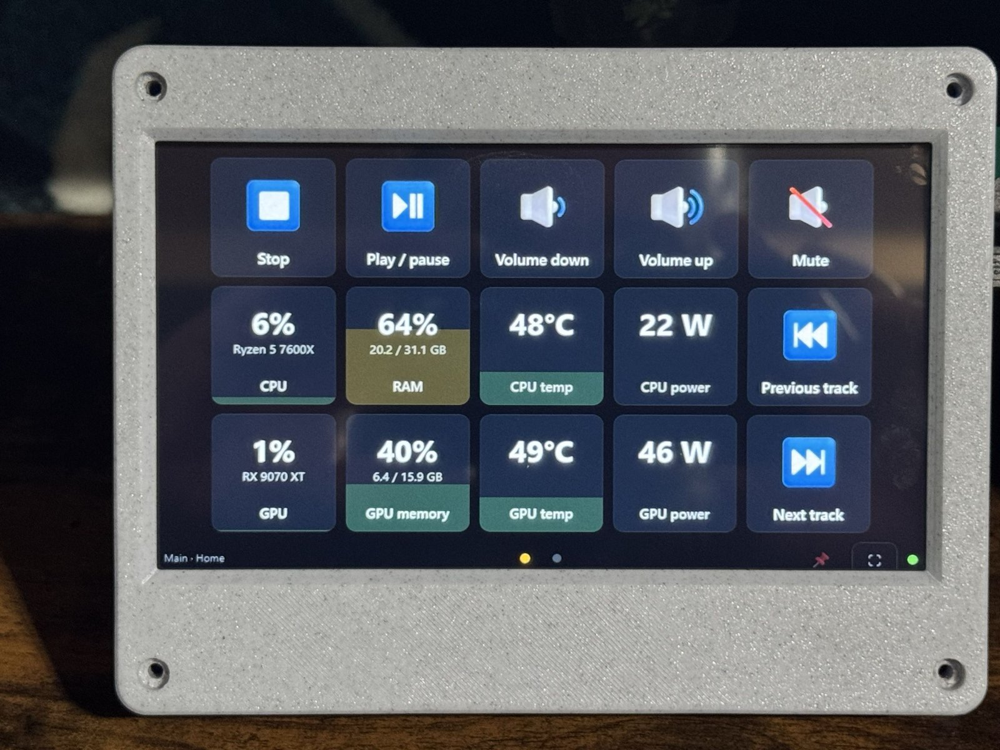
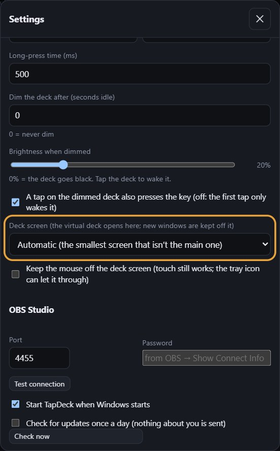
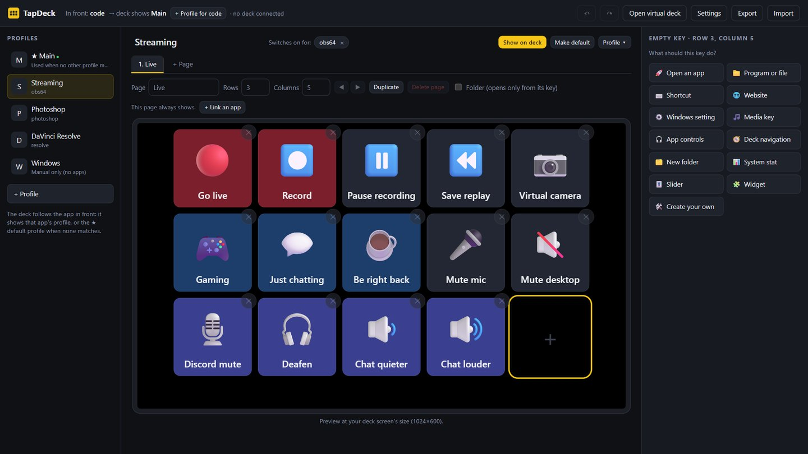
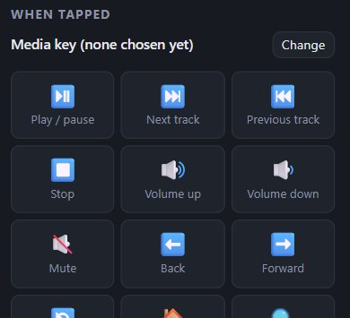
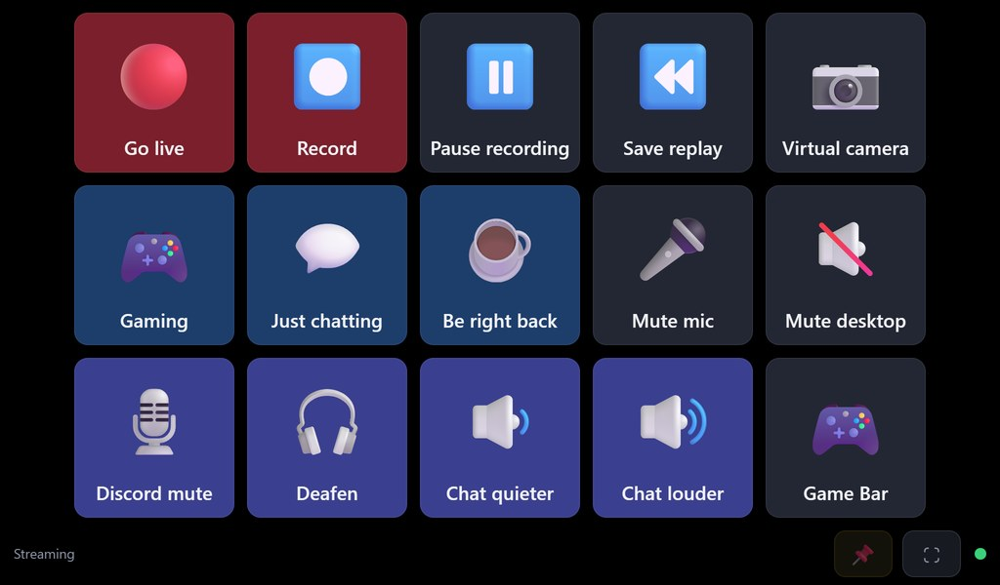

What you need, the parts I use, and the first five minutes
TapDeck turns a small touch screen next to your keyboard into a deck of buttons for your PC: shortcuts, apps, volume, mute, OBS and live stats, one tap each. Get TapDeck from the Microsoft Store.

Some screens do both over a single USB-C cable. Both kinds work.
No touch screen yet? TapDeck can show the deck in a window on your main screen instead, and a mouse click works like a tap. It's a good way to try it first.
1024 × 600 IPS, HDMI for the picture, USB for touch. Mine needed no extra drivers.
View on Amazon*A 3D-printed case for this size of screen. Its feet flip to stand the screen at 15° or 30°.
Get it on Thingiverse* Affiliate link: as an Amazon Associate I earn from qualifying purchases. These are just what I use. TapDeck works with any touch screen.
The case was designed for a Raspberry Pi screen of this size, but you don't need a Pi: the screen plugs straight into your PC. See the Thingiverse page for print settings, screws and the license.
Connect HDMI for the picture and USB for touch, as in the picture above. In Windows Settings, under System > Display, the touch screen should show up as an extra display. Leave it set to Extend these displays.
If tapping the small screen moves the cursor on your main screen, Windows has matched touch to the wrong display. Open Control Panel, search for Calibrate the screen for pen or touch input, choose Setup, and tap the small screen when Windows asks.
The deck opens full screen on the touch screen, and the editor opens on your main screen. TapDeck picks the smallest screen that isn't your main one. To choose a different one, open Settings in the editor and change Deck screen.

In the editor, click an empty key (the one with a +). The right side asks what it should do: open an app, press a shortcut, open a website, control media, change pages, add a slider or a widget, and more.

Most choices then show ready-made keys. Tap one and the key gets its action, picture and name in one go. Change any of them afterwards, or pick Create your own to build a key from scratch.

Changes show on the deck straight away. Swipe sideways on the deck to change pages. Give an app its own profile and the deck switches to it whenever that app is in front.

Questions or problems: open an issue at github.com/CallousCarl/tapdeck-releases/issues. Read the privacy policy.